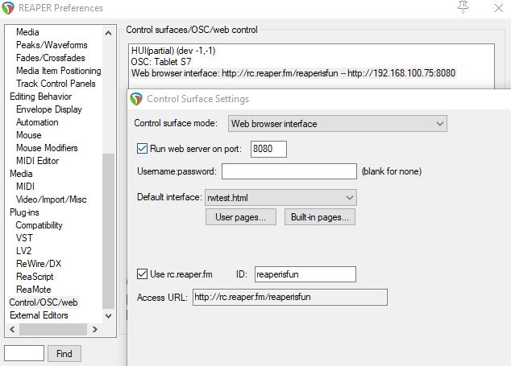

Reaper to Touch OSC#
This asks REAPER to execute a few scripts via Web Interface. The result is a .tosc file generated from the FX Params of the Last Touched FX.
Install Reaper, Reapack and SWS Extensions.
Import this repository to your Reapack:
https://raw.githubusercontent.com/AlbertoV5/ReaperTools/master/index.xml
Install all LISZT scripts from AlbertoV5-ReaperTools.
Setup Python in Reaper* and install dependencies.
tosclib>=0.1.10
aiohttp==3.8.1
Setup Reaper Web Interface.**
Load up an FX and run this script.
from dataclasses import dataclass
from hashlib import sha1
from pathlib import Path
import asyncio
import aiohttp
import time
def hashSha1(actionPath: Path):
"""Reaper current hashing as of 6.57. Ask Justin.
https://askjf.com/index.php?q=6075s"""
fix = str(actionPath).upper().replace("\\", "/")
return f"_RS{sha1(fix.encode()).hexdigest()}"
@dataclass
class REAPER:
"""Reaper config values. Change them to fit your setup."""
lisztPath: Path = Path("AlbertoV5-ReaperTools") / "liszt"
host: str = "127.0.0.1"
port: str = "9500"
@dataclass
class Actions:
pull: str = hashSha1(REAPER.lisztPath / "liszt-pull.py")
generate: str = hashSha1(REAPER.lisztPath / "liszt-generate.py")
openProjPath: str = (
"_S&M_OPEN_PRJ_PATH" #: Optional, in case you have SWS Extensions
)
async def pingReaper(*args):
"""Ask Reaper to execute commands by name or hash"""
async with aiohttp.ClientSession() as session:
for arg in args:
print(f"http://{REAPER.host}:{REAPER.port}/_/{arg}")
async with session.get(
f"http://{REAPER.host}:{REAPER.port}/_/{arg}"
) as resp:
_ = await resp.text(encoding="UTF-8")
def main():
asyncio.run(pingReaper(Actions.pull, Actions.generate, Actions.openProjPath))
if __name__ == "__main__":
start = time.process_time()
main()
end = time.process_time()
print("Hey Reaper!", end - start)
The result will be a template with Faders named as the FX Parameters with OSC messages named after them:
Feel free to make your own version of liszt-generate.py to fit your needs.

Here is more info on how to set up stuff:
*Set up Python in Reaper:
$ where python
Avoid using Anaconda environments in Windows as they have issues with Reaper. Set the path here:

**Web Interface settings:
The only thing you need is the port. If you are running this script from another local machine then change the host to the Reaper machine IP or use the Access URL.
